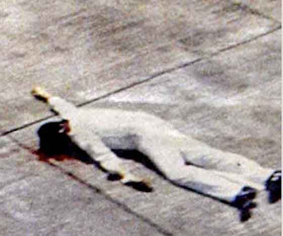

Now, are you curious on how the tyrannical system of the government ended?
After years of dictatorship, martial law faced three type of opposition in the 1970’s, namely: reformist opposition, revolutionary opposition, and religious opposition.
br>
Reformist opposition, also known as the legal opposition, was composed of members of the
Upper-middle class. They advocated political reforms through nonviolent tactics. However, it is not united movement.
Revolutionary Opposition is the opposite of the reformist opposition as this resulted to deaths of some. When Martial law was declared, the Moro National Liberation Front (MNLF) was mobilized and the Armed Forces of the Philippines (AFP) attempted to seize their “illegal” firearms which resulted to 13 000 deaths and over a million of displacement. Also, the Communist Party of the Philippines (CPP) made “anti-imperialist” alliances with nationalist senators namely Lorenzo Tañada and Jose Diokno who could lend credibility and publicity to claims of the Marcos government’s

human rights violations.
Religious opposition is led by protestant churches who have been vocal to their opposition of the dictatorship since 1972. They held mass protest actions and boycott campaigns for the April plebiscite and the June presidential elections.
The deteriorating health or Marcos is also a factor of the decline of his government. Also, the assassination of Benigno Aquino Jr. also resulted to people losing trust in the Marcos’ regime.
Finally, the most historical event known as the “EDSA People Power Revolution” which showcased the unity of the Filipino people also took place because of this dictatorship. Happened from February 22-25, 1986 in Metro Manila, this 4-day bloodless revolution overthrew a tyrant government which is participated by over a million of Filipinos.
This revolution is a result of long-time oppressed freedom and life-threatening abuses executed by the Marcos government. This revolution also proved that there is no need for violence and blood shed to stand up against an abusive government.